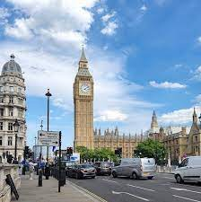

LONDRES
Londres es uno de los centros culturales más importantes del mundo y una de las ciudades que recibe más visitantes del planeta. Una de las características más fascinantes de la capital del Reino Unido es su naturaleza cambiante, unida a sus orgullosas tradiciones
Fundada por el Imperio Romano hace casi dos milenios con el nombre de Londinium, la capital de Inglaterra es una ciudad de enorme bagaje histórico y cultural, sede de importantes museos y el subterráneo más antiguo del mundo. En su superficie de 1572 km2 habitan 13.879.757 habitantes (contando el área metropolitana) y se encuentra el mayor centro financiero del mundo.
